Обучение на практического психолога — это путь к востребованной профессии, связанной с оказанием психологической помощи и консультированием. Программы профессиональной переподготовки по практической психологии включают теоретическую базу и практические задания, помогают студентам освоить навыки консультирования, методы психологической диагностики и семейной терапии. Обучение проводится в дистанционном формате, что удобно для тех, кто совмещает учебу с работой. Мы составили рейтинг программ, где слушатели получают дипломы установленного образца, проходят практические занятия и по завершении обучения готовы оказывать психологическую поддержку клиентам в различных сферах.
Информация обновлена:
ТОП онлайн-программ обучения практической психологии
- 🏆 Психологическое консультирование — Московский институт психологии (по промокоду onlinekursy скидка 🎁 10%)
- 🏆 Практический психолог – Онлайн-Институт Smart (Смарт)
- 🏆 Психолог-консультант – Talentsy (онлайн-университет помогающих профессий Талентси) (по промокоду EDPART5 скидка 🎁 5%)
- Практическая психология с дополнительной специализацией в онкопсихологии – НАДПО (по промокоду onlinekursy скидка 🎁 5%)
- Профессия психолог-консультант – Психодемия
- Практическая психология с дополнительной специализацией в групповой (тренинговой) работе – НАДПО (по промокоду onlinekursy скидка 🎁 5%)
- Практическая психология — МИТУ (по промокоду Partners15 скидка 🎁 15%)
- Практическая психология – МИПО (по промокоду onlinekursy скидка 🎁 10% )
- Практическая психология с основами психотерапии — НЦРДО (по промокоду onlinekursy скидка 🎁 5%)
- Практическая психология – МШПП
- Практическая психология с дополнительной специализацией в области применения психотерапевтических технологий — НИИДПО
- Психолог-консультант. Психологическое консультирование – Московская Бизнес Академия
- Профессия психолог-консультант – Нетология
- Психолог-практик: базовая клиентоориентированная стратегия и методы – ИППСС
- Практическая психология — ИПО (по промокоду onlinekursy12 скидка 🎁 12% )
- Практическая психология. Психотерапевтические технологии в работе психолога – ЦАППКК (по промокоду onlinekursy скидка 🎁 5%)
- Практический психолог – ЭКОДПО
- Практическая психология для себя – Академия Эдюсон (по промокоду onlinekursy скидка 🎁 5%)
- Обучение профессии психолога — Академия EDPRO
- Психолог-консультант – Международная школа профессий
- Практическая психология: основы диагностики и психологического консультирования личности — Среда обучения
Отличительные преимущества каждой дистанционной программы обучения по практической психологии
| № | Название курса и школы | Преимущества | |
|---|---|---|---|
| 🥇 | Психологическое консультирование — Московский институт психологии | 644 часа практики, Балинтовские группы, частная практика | Перейти |
| 🥈 | Практический психолог – Онлайн Институт Smart | 1300 часов, практика с клиентами, международный диплом | Перейти |
| 🥉 | Психолог-консультант – Talentsy | Двойной диплом, доступ к клиентам, пожизненный доступ | Перейти |
| 4 | Практическая психология с онкопсихологией – НАДПО | Онкопсихология, 1950 часов, диплом гос. образца | Перейти |
| 5 | Профессия психолог-консультант – Психодемия | Интерактивные тренажёры, практика, супервизии | Перейти |
| 6 | Психология с тренинговой специализацией – НАДПО | Двойная квалификация, воркшопы, супервизии | Перейти |
| 7 | Практическая психология — МИТУ | 900 часов, низкая цена, гос. диплом | Перейти |
| 8 | Практическая психология – МИПО | 728 часов, Центр карьеры, ФИС-ФРДО | Перейти |
| 9 | Психология с психотерапией – НЦИРДО | 1940 часов, помощь в карьере, семейная психотерапия | Перейти |
| 10 | Практическая психология – МШПП | Малые группы, международный диплом, доступ навсегда | Перейти |
| 11 | Психология с психотерапевтическими технологиями – НИИДПО | 2 квалификации, 13 000+ вебинаров, ФИС ФРДО | Перейти |
| 12 | Психолог-консультант – Московская Бизнес Академия | Цена, ФРДО, мощная поддержка трудоустройства | Перейти |
| 13 | Профессия психолог-консультант – Нетология | GigaChat, личный бренд, 2 диплома | Перейти |
| 14 | Психолог-практик – ИППСС | Для без базы, EMDR, супервизии, 1164 часа | Перейти |
| 15 | Практическая психология – ИПО | Гибкий график, 30% скидка, 2 программа в подарок | Перейти |
| 16 | Психотерапевтические технологии – ЦАППКК | 1650 часов, пожизненный доступ, HR-наставник | Перейти |
| 17 | Практический психолог – ЭКОДПО | Быстрый старт, диплом за день, цена от 29 980 ₽ | Перейти |
| 18 | Психология для себя – Эдюсон | Для личного роста, 58 часов, консультация с экспертом | Перейти |
| 19 | Обучение профессии психолога – EDPRO | Два диплома, бесплатные консультации, коучинг | Перейти |
| 20 | Психолог-консультант – Международная школа профессий | Соцпрограммы, трансформационные игры, 64 недели | Перейти |
| 21 | Практическая психология: диагностика и консультирование – МИП + Среда обучения | 2 диплома, карьерный центр, правовые аспекты | Перейти |
1. 🏆 Психологическое консультирование — Московский институт психологии
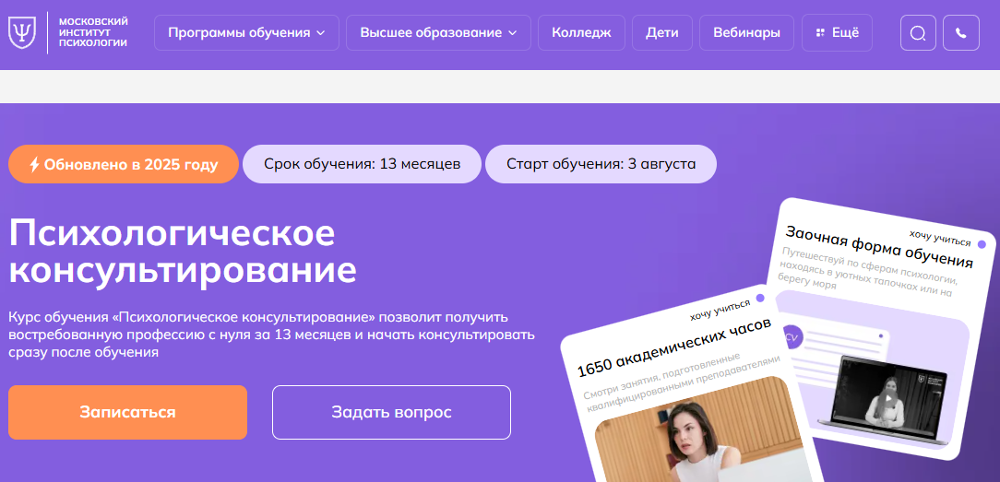
- ✅ Официальный сайт: mip.institute
- 💸 Цена обучения: от 180 000 ₽ до 265 000 ₽ в год (в зависимости от тарифа).
- 💳 Рассрочка: от 15 000 ₽ в месяц, без переплат.
- 📚 Формат: дистанционный курс, видеолекции, рабочие тетради, задания, презентации, тесты, групповые интервизии и супервизии.
- ⏳ Продолжительность: 12 месяцев.
- 📜 Документ: диплом о профессиональной переподготовке с квалификацией «Психолог-консультант».
- 📝 Трудоустройство: помощь в запуске частной практики, участие в Центре карьеры, доступ к профессиональному сообществу.
- 🔷 Для кого подходит курс: для специалистов с высшим образованием и студентов старших курсов, стремящихся к освоению профессии практического психолога.
Особенности:
Программа профессиональной переподготовки ориентирована на освоение практических навыков психологического консультирования в онлайн-формате. Занятия проходят дистанционно, что удобно для совмещения с работой или учебой. В курс входят теоретические блоки по клинической психологии, возрастной и семейной психотерапии, а также практические занятия с реальными кейсами. Студенты участвуют в интервизиях и Балинтовских группах, что помогает развивать навыки консультирования и преодолевать профессиональное выгорание. Выпускники получают диплом, который позволяет официально оказывать психологическую помощь клиентам.
Чему учатся студенты:
- Проводить психологическую диагностику и анализ эмоционального состояния
- Применять методы психологической помощи в индивидуальной и групповой работе
- Разрабатывать консультационные программы и проводить сессии
- Решать задачи в сфере семейной терапии и межличностных конфликтов
- Использовать современные подходы в практической психологии
- Понимать основы нейропсихологии, психосоматики, патопсихологии
- Работать с запросами клиентов по тревоге, самооценке, кризисам и стрессам
Преподаватели:
- Рубцова Надя — практикующий психолог
- Додонова Ирина Викторовна — опытный специалист в области консультирования
- Сергачева Ксения Викторовна — преподаватель и практик в области психотерапии
Преимущества:
- Дистанционный формат обучения — учитесь в удобное время и из любой точки мира
- 644 часа практики с обратной связью от кураторов и супервизоров
- Участие в Балинтовских группах и интервизиях в процессе обучения
- Программа включает профессиональные сообщества и карьерную поддержку
- Доступ ко всем учебным материалам и более 750 вебинарам
- Освоение современных подходов в консультировании и диагностике
- Платформа с лекциями, тестами и учебным расписанием
- Возможность ведения частной практики после завершения курса
Отзывы учеников:
Слушатели хвалят доступный дистанционный формат и насыщенность учебной программы. Чаще всего отмечают качественную обратную связь, поддержку наставников и актуальность материалов. Многие подчеркивают пользу практических занятий и возможности для быстрого старта частной практики после получения диплома.
Перейти на официальный сайт курса2. 🏆 Практический психолог – Онлайн Институт Smart
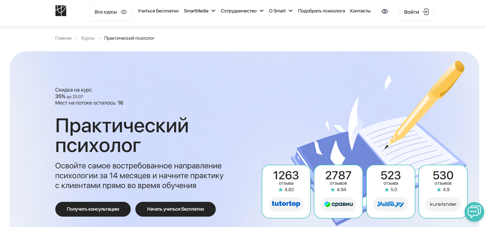
- ✅ Официальный сайт: smart-inc.ru
- 💸 Цена обучения: от 234 900 ₽ со скидкой -35%
- 💳 Рассрочка: от 9788 ₽/мес на 3, 6, 12 и 24 месяца без переплат.
- 📚 Формат: дистанционный курс, видеолекции 24/7, супервизии, домашние задания, тесты, чат с экспертами, практика с клиентами.
- ⏳ Продолжительность: 14 месяцев, 1300 часов.
- 📜 Документ: диплом о профессиональной переподготовке, международный диплом MBA.
- 📝 Трудоустройство: предоставление клиентов для практики, карьерное сопровождение, помощь в старте частной практики.
- 🔷 Для кого подходит курс: начинающим и практикующим специалистам, людям без профильного образования, всем, кто хочет получить профессию психолога.
Особенности:
Программа разработана для дистанционного формата, что позволяет совмещать обучение с работой и другими обязанностями. Студенты изучают теорию и одновременно применяют её на практике с реальными клиентами. Включены супервизии, коуч-сессии и работа в терапевтических тройках. Участники получают доступ к онлайн-кабинету психолога и личному бренду как дополнительным инструментам. После окончания курса выдают диплом, зарегистрированный в ФРДО, с возможностью международного признания. Курс подходит для тех, кто хочет быстро освоить навыки консультирования и начать карьеру. Обучение проходит в интерактивной системе с круглосуточной поддержкой и менторским сопровождением.
Чему учатся студенты:
- Проводить психологическую консультацию и выявлять запросы клиентов
- Работать с проблемами самооценки, личных и семейных отношений
- Использовать современные методы психологического консультирования
- Применять техники групповой и индивидуальной терапии
- Организовывать работу онлайн и в офлайн-формате
- Создавать доверительные отношения с клиентом
- Проходить супервизии и получать профессиональную обратную связь
Преподаватели:
- Марина Сокольская — доктор психологических наук, доцент ВАК, профессор кафедры психологии МИФИ, академик РАЕ
- Светлана Варнавская — практикующий психолог, преподаватель с многолетним стажем
Преимущества:
- Практические задания и разбор реальных кейсов
- Возможность учиться в любое удобное время
- Поддержка кураторов и менторов 24/7
- Включена подготовка к выходу на рынок услуг
- Возможность вступления в профессиональные сообщества
- Признание диплома на территории РФ и за рубежом
- Гарантированный доступ к демосессиям и дополнительным модулям
Отзывы учеников:
Слушатели часто отмечают высокий уровень преподавания, обилие практики и поддержку на всех этапах обучения. Отдельно подчеркивается удобный формат и доступность материалов. Многие студенты уже проводят консультации с клиентами еще до завершения курса.
Перейти на официальный сайт курса3. 🏆 Психолог-консультант – Talentsy (онлайн-университет помогающих профессий №1 в РФ)
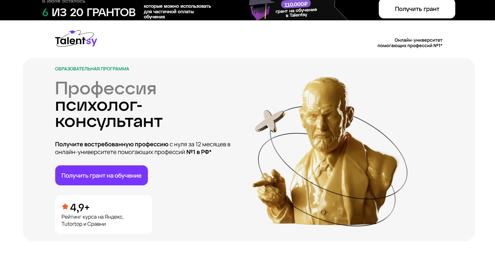
- ✅ Официальный сайт: talentsy.ru
- 💸 Цена обучения: от 112 500 ₽ (с учетом гранта 110 000 ₽ и рассрочки)
- 💳 Рассрочка: от 9 375 ₽ в месяц до 24 месяцев без переплат, первый платеж — через 2 месяца
- 📚 Формат: дистанционный формат: видеоуроки, PDF-конспекты, практические задания, супервизии, онлайн-встречи, доступ 24/7
- ⏳ Продолжительность: 12 месяцев
- 📜 Документ: диплом о профессиональной переподготовке РФ + международный диплом MBA
- 📝 Трудоустройство: доступ к первым 10 клиентам через платформу pomogayu.ru, обучение личному бренду
- 🔷 Для кого подходит курс: для тех, кто хочет освоить профессию психолога без базового образования, а также для специалистов смежных направлений
Особенности:
Курс охватывает ключевые направления практической и клинической психологии, включая семейную терапию и психологическое консультирование. Обучение проходит в дистанционном формате с постоянной поддержкой кураторов и экспертов. Программа включает 450 часов практики, консультации с реальными клиентами уже в процессе обучения, а также проработку 10 популярных методов психологической помощи. Студенты получают доступ к обновлениям курса и всем материалам пожизненно. Программа аккредитована и соответствует профессиональным стандартам, а выпускники получают два диплома — российский и международный.
Чему учатся студенты:
- Навыкам консультирования и ведения сессий
- Методам психологической диагностики
- Работе с травмами, выгоранием и возрастными кризисами
- Приемам телесно-ориентированной и когнитивно-поведенческой терапии
- Психоанализу, гештальт-подходу и арт-терапии
- Установлению доверительных отношений с клиентом
- Построению личного бренда психолога
Преподаватели:
- Ольга Виндекер — практикующий клинический психолог, член РПЛ, автор книг и телеведущая
- Инна Васильева — доктор психологических наук, эксперт в психологии интуиции
- Ксения Кунникова — кандидат наук, нейропсихолог, руководитель грантов РФФИ
- Елена Николаева — профессор, заведующая кафедрой возрастной психологии
- Анжелика Вильгельм — психолог-консультант, преподаватель высшей школы
- Юлия Лебедева — клинический и детский психолог, преподаватель
- Рустам Муслумов — кандидат наук, доцент УрФУ
- Евгения Меглинская — специалист по пищевому поведению, эксперт «Здоровое ТВ»
- Ярослав Коряков — психоаналитик, преподаватель, член Европейской конфедерации
Преимущества:
- Возможность освоить профессию с нуля в удобном формате
- Получение двух дипломов, включая международный MBA
- Пожизненный доступ к учебным материалам и обновлениям
- Практика с реальными клиентами в процессе обучения
- Сильный преподавательский состав из клинических и практических психологов
- Поддержка куратора, супервизора и специалиста по бренду
- Обучение востребованным навыкам консультирования в онлайн формате
- Официальная лицензия и налоговый вычет 13% от стоимости
Отзывы учеников:
Студенты чаще всего отмечают высокий уровень преподавания, практическую направленность курса и поддержку наставников. Также хвалят гибкий график, удобный личный кабинет и возможность получить первых клиентов уже в процессе обучения.
Перейти на официальный сайт курса4. Практическая психология с дополнительной специализацией в онкопсихологии – Национальная академия дополнительного профессионального образования
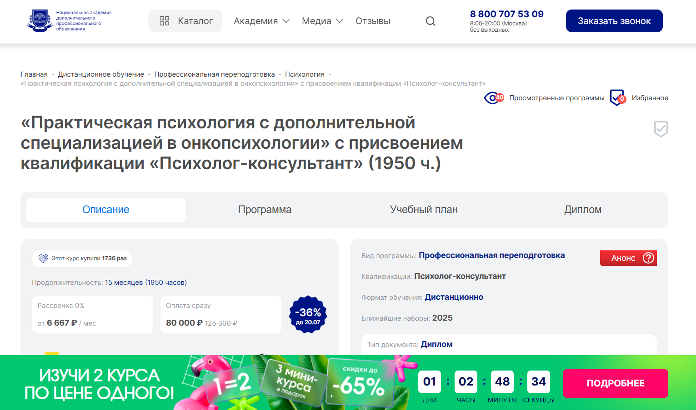
- ✅ Официальный сайт: nadpo.ru
- 💸 Цена обучения: индивидуально, от 80 000 ₽ в месяц, уточняется на сайте.
- 💳 Рассрочка: доступна,от 6 667 ₽ в месяц, оформить можно через форму обратной связи.
- 📚 Формат: дистанционный курс, включает видеоуроки, практические задания, теоретические модули и итоговую аттестацию.
- ⏳ Продолжительность: 1950 академических часов.
- 📜 Документ: диплом о профессиональной переподготовке с присвоением квалификации «Психолог-консультант».
- 📝 Трудоустройство: выпускники получают диплом государственного образца, что позволяет официально работать в сфере практической психологии и онкопсихологии.
- 🔷 Для кого подходит курс: для тех, кто хочет освоить профессию психолога, получить квалификацию консультанта и работать с людьми, проходящими лечение от онкологических заболеваний.
Особенности:
Курс сочетает в себе теоретическую базу клинической психологии с практическими навыками консультирования. Дистанционный формат делает обучение гибким и удобным, особенно для тех, кто совмещает учебу с работой. Особое внимание уделяется подготовке к работе с клиентами, находящимися в кризисных состояниях. Программа включает изучение методов психологической помощи, сопровождения и поддержки в сфере онкопсихологии. Студенты осваивают современные подходы к психологическому консультированию, участвуют в практических занятиях и получают ценные знания от опытных преподавателей. Обучение завершится дипломом, который соответствует профессиональным стандартам. Подходит как для начинающих, так и для действующих специалистов, стремящихся расширить свои компетенции в области семейной психотерапии и медицинской психологии.
Чему учатся студенты:
- Методам психологической поддержки онкопациентов и их семей
- Навыкам консультирования в сфере клинической психологии
- Проведению психологической диагностики и оценки состояния клиента
- Применению методов семейной терапии и индивидуального консультирования
- Работе в дистанционном формате с клиентами разных категорий
Преподаватели:
- Информация о преподавателях представлена на официальном сайте nadpo.ru
Преимущества:
- Формат обучения — полностью дистанционный, подходит для любого графика
- Доступ к платформе с учебными материалами 24/7
- Возможность освоить профессию психолога без отрыва от текущей деятельности
- Курс подходит под профстандарты и актуальные требования
- Обучение проводят преподаватели с практическим опытом
- Программа включает практические задания для закрепления навыков
- Выдается диплом о профессиональной переподготовке, признанный работодателями
- Поддержка на всех этапах обучения: от регистрации до получения диплома
Отзывы учеников:
Слушатели отмечают удобный дистанционный формат и структурированный учебный процесс. Часто хвалят насыщенность материалов, понятную подачу и актуальные знания. Программа помогает освоить практическую психологию с нуля, а диплом открывает путь к профессиональной деятельности. Многие говорят, что обучение помогло повысить уверенность в работе с клиентами и систематизировать знания.
Перейти на официальный сайт курса5. Профессия психолог-консультант – Психодемия
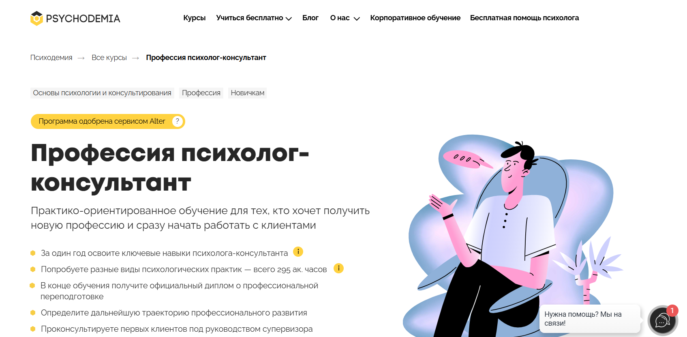
- ✅ Официальный сайт: psychodemia.ru
- 💸 Цена: от 265 000 ₽ до 363 788 ₽ в зависимости от тарифа.
- 💳 Рассрочка: до 24 месяцев, платеж от 11 041 ₽ в месяц.
- 📚 Формат: дистанционный формат обучения, включает видеоуроки, тренажёры, практику, супервизии, лекции, демосессии, тесты.
- ⏳ Продолжительность: 14 месяцев, 530+ академических часов.
- 📜 Документ: диплом о профессиональной переподготовке установленного образца (при наличии высшего образования).
- 📝 Трудоустройство: практика с клиентами под супервизией, помощь в позиционировании и поиске первых клиентов.
- 🔷 Для кого подходит курс: новичкам в психологии, практикующим специалистам с минимальной практикой, студентам и выпускникам профильных вузов.
Особенности:
Программа включает интенсивное дистанционное обучение, акцент на практические навыки и навыки консультирования. Уже в процессе прохождения курса студенты начинают проводить психологические консультации с реальными клиентами под наблюдением супервизора. Обучение охватывает направления клинической психологии, семейного консультирования, когнитивно-поведенческой терапии. Благодаря удобному формату занятий и возможности заниматься онлайн, слушатели осваивают профессию психолога с нуля и получают уверенный старт в профессиональной деятельности. Теоретическая база сопровождается глубоким практическим блоком, который позволяет освоить методы психологической работы на практике и подготовиться к реальным задачам. Подходит для тех, кто хочет перейти в сферу практического психолога или клинического специалиста. Выпускники получают диплом, соответствующий требованиям программ переподготовки в области психологического консультирования.
Чему учатся студенты:
- Работать с клиентом от первой сессии до завершения консультирования
- Формировать и анализировать запросы клиентов
- Выбирать подходящие методы психологической помощи
- Проводить психологическую диагностику и практическую задачу
- Использовать навыки консультирования в различных сферах
- Понимать границы профессиональных компетенций
- Продвигать свои услуги и формировать индивидуальный стиль работы
Преподаватели:
- Мария Данина — кандидат психологических наук, практикующий психолог с 17-летним стажем, основатель Психодемии
- Татьяна Альмухаметова — научный руководитель курса, психотерапевт, супервизор, специалист по КПТ и схема-терапии
Преимущества:
- Доступ к практике с реальными клиентами в дистанционном формате
- Освоение практических навыков работы в разных направлениях психотерапии
- Пошаговая программа по освоению профессии психолога
- Гибкий график обучения — утренние и вечерние группы
- Поддержка кураторов и преподавателей на всех этапах обучения
- Интерактивные тренажёры и формат «аквариум» для закрепления знаний
- Разбор демосессий российских и зарубежных специалистов
- Возможность получения налогового вычета за оплату обучения
Отзывы учеников:
Студенты отмечают практико-ориентированность курса и большое количество реальной практики, что особенно важно для старта частной практики. Отмечают удобный формат дистанционного курса, сильную поддержку преподавателей, продуманную структуру занятий и возможность осваивать навыки консультирования в реальных условиях. Многим нравится разбор кейсов и концептуализация сессий.
Перейти на официальный сайт курса6. Практическая психология с дополнительной специализацией в групповой (тренинговой) работе – Национальная академия дополнительного профессионального образования
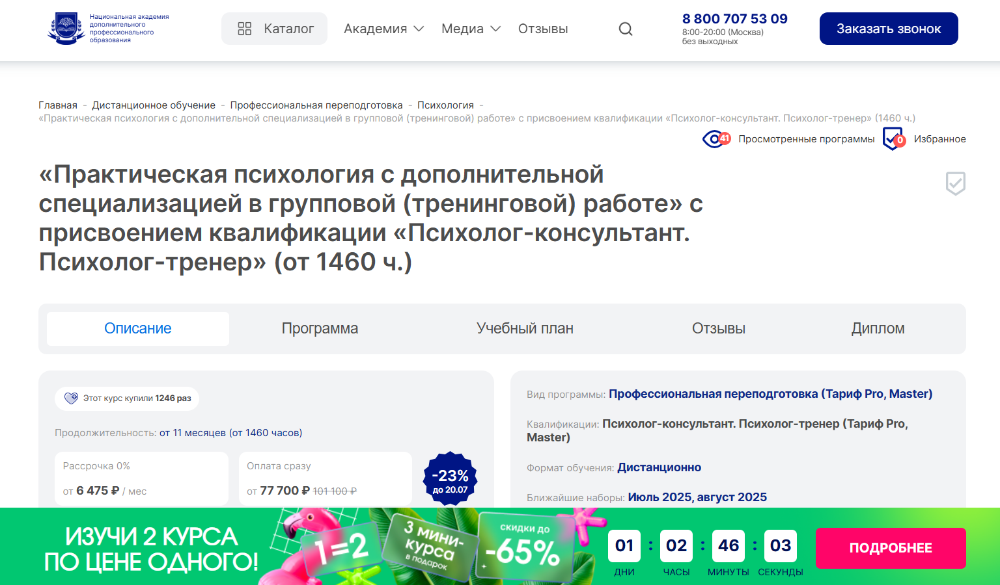
- ✅ Официальный сайт: nadpo.ru
- 💸 Цена обучения: от 77 700 ₽ (полная стоимость — 101 100 ₽ -23%).
- 💳 Рассрочка: от 6 475 ₽ в месяц, 0% переплат.
- 📚 Формат: дистанционный формат: видеолекции, тесты, практические задания, кейсы, воркшопы, супервизии, консультации с преподавателями.
- ⏳ Продолжительность: от 11 месяцев (от 1460 часов).
- 📜 Документ: диплом о профессиональной переподготовке с присвоением квалификаций «Психолог-консультант» и «Психолог-тренер».
- 📝 Трудоустройство: сопровождение выпускников, помощь HR-наставника, предложения от партнёров во время обучения.
- 🔷 Для кого подходит курс: для начинающих специалистов, практикующих психологов, корпоративных клиентов и тех, кто хочет развить профессиональные навыки в психологическом консультировании.
Особенности:
Курс создаёт прочную основу в практическом подходе к работе с группами и индивидуальными клиентами. Особое внимание уделяется развитию навыков консультирования, личной терапии и практической психологической подготовке. Учебный процесс включает элементы семейной терапии, тренингов, групповой терапии и диагностических методик. Студенты получают доступ к библиотекам ЛитРес и БиблиоКлуб, отрабатывают роли терапевта и клиента, участвуют в супервизиях, разбирают реальные кейсы. Программа полностью соответствует требованиям ФГОС и выдает диплом, действующий по всей РФ. Образование строится в дистанционном формате, позволяющем совмещать учёбу с работой.
Чему учатся студенты:
- Методам проведения групповой тренинговой работы
- Психологическому консультированию и техникам сопровождения клиентов
- Проведению практической диагностики и интерпретации данных
- Работе с запросами клиентов: стресс, выгорание, цели, мотивация
- Навыкам работы в онлайн формате: вебинары, видеосессии, чаты
- Применению инструментов семейного консультирования
- Развитию навыков общения и управлению эмоциональными состояниями
Преподаватели:
- Зотова Мария Юрьевна — магистр психоаналитического бизнес-консультирования, основатель НАДПО, разработчик авторских программ, научный руководитель курса
- Тарасов Сергей Васильевич — кандидат психологических наук, доцент, опыт с 2000 года
- Егорова Наталья Николаевна — кандидат психологических наук, 22 года опыта
- Челнокова Ирина Александровна — кандидат психологических наук, член Российской ассоциации КПТ
- Санжапова Эльмира Викторовна — кандидат педагогических наук, доцент, стаж с 2005 года
Преимущества:
- Более 30% курса — практические занятия с обратной связью
- Доступ к воркшопам, киноклубам, книгоклубам и супервизиям
- Удобный формат обучения — онлайн в любое время
- Государственный диплом о профессиональной переподготовке
- Диплом с присвоением сразу двух квалификаций
- Поддержка карьерного старта: от консультаций до предложений от работодателей
Отзывы учеников:
Студенты положительно оценивают насыщенность программы, профессионализм преподавателей и большое количество практики. Отмечают удобный дистанционный формат, полезность обратной связи, а также реальную поддержку при трудоустройстве. Часто подчеркивают, что получили необходимые профессиональные навыки и уверенность в начале практической деятельности.
Перейти на официальный сайт курса7. Практическая психология — Московский институт технологий и управления
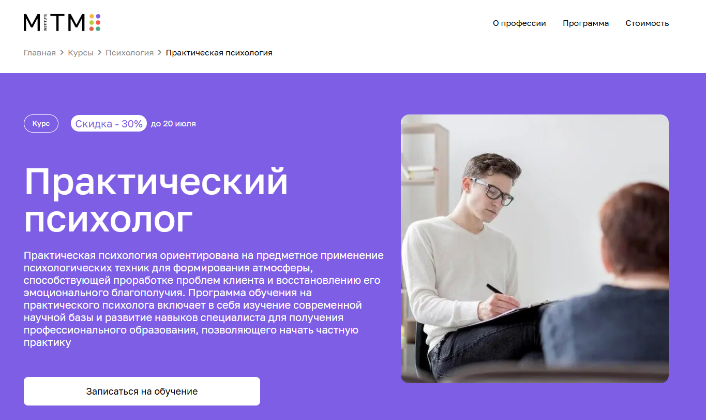
- ✅ Официальный сайт: mitm.institute
- 💸 Цена: 121 440 ₽, со скидкой 30% — 84 960 ₽
- 💳 Рассрочка:10 120 ₽/мес, со скидкой 30% — 7 080 ₽/мес беспроцентная, на 12 месяцев, возможна через «Тинькофф Банк»
- 📚 Формат: дистанционный формат обучения: вебинары, записи, домашние задания, демонстрационные сессии, поддержка куратора, общение в Telegram-чате
- ⏳ Продолжительность: 6 месяцев, 900 часов обучения
- 📜 Документ: диплом государственного образца о профессиональной переподготовке
- 📝 Трудоустройство: возможность начать частную практику, освоить навыки консультирования и работать с клиентами
- 🔷 Для кого подходит курс: для тех, кто хочет получить профессиональное психологическое образование с нуля, студентам и практикующим психологам, желающим развить навыки
Особенности:
Программа ориентирована на практическое применение методов психологического консультирования, что делает ее полезной как для новичков, так и для специалистов в сфере практического психологического образования. Обучение проходит полностью в дистанционном формате, что позволяет совмещать его с основной работой. Студенты получают доступ к лекциям, кейсам, практическим заданиям и супервизиям. Программа включает форматы обучения, соответствующие стандартам подготовки клинического психолога и семейного консультанта. Все этапы обучения структурированы для освоения ключевых навыков консультирования. Институт предоставляет официальные документы после завершения курсов, подтверждающие профессиональные компетенции.
Чему учатся студенты:
- Анализу структуры семьи и работе в сфере семейной терапии
- Методам психодиагностики и психологической диагностики
- Пониманию клинической психологии и психофизиологии
- Проведению психологических консультаций по личным и семейным вопросам
- Использованию современных методов психологической помощи
- Работе с низкой самооценкой, стрессом, стагнацией и трудностями в общении
Преподаватели:
- Пронькина Анастасия — клинический психолог, КПТ-терапевт, член Ассоциации когнитивно-поведенческой психотерапии
- Шелухина Анна — магистр психологии, сертифицированный арт-терапевт, преподаватель
- Леонова Светлана — клинический психолог, психоаналитик, сексолог, стаж 11 лет
Преимущества:
- Гибкий дистанционный формат — обучение без привязки к месту
- Поддержка кураторов и менторов на всех этапах обучения
- Практические занятия и супервизии для развития реальных навыков консультирования
- Курс подходит для получения новой профессии или повышения квалификации
- Официальный диплом о профессиональной переподготовке
- Обучение построено по современным требованиям работодателей
- Возможность вернуть 13% от стоимости обучения через налоговый вычет
- Платформа поддерживает самостоятельное планирование учебного графика
Отзывы учеников:
Студенты отмечают удобный онлайн-формат, наличие практических заданий и обратной связи от преподавателей. Отдельно выделяют поддержку кураторов, вовлеченность менторов и доступность материалов. Высоко ценится возможность совмещать обучение с работой и получать востребованные навыки практического психолога.
Перейти на официальный сайт курса8. Практическая психология – Московский Институт Профессионального Образования
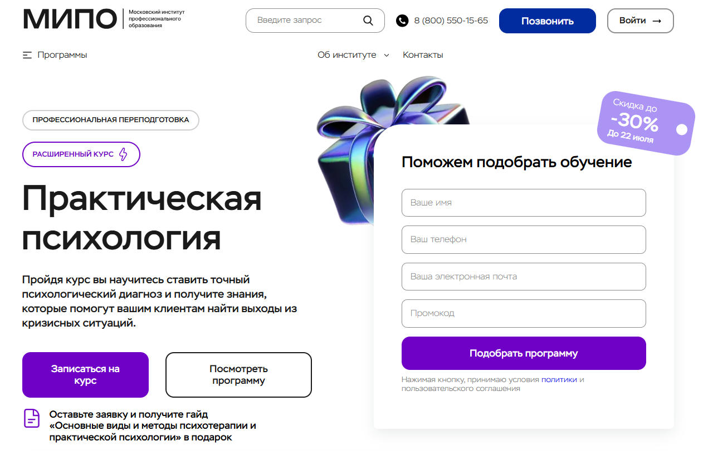
- ✅ Официальный сайт: mipo.msk.ru
- 💸 Цена обучения: от 72 930 ₽ с учетом скидки до 30%
- 💳 Рассрочка: доступна до 24 месяцев, от 3 040 ₽/мес
- 📚 Формат: дистанционный формат, включает онлайн-вебинары, лекции, практические задания, тесты, видеоматериалы, работу с куратором
- ⏳ Продолжительность: 8 месяцев, 728 часов
- 📜 Документ: диплом о профессиональной переподготовке, регистрация в ФИС-ФРДО
- 📝 Трудоустройство: сопровождение ментором и помощь Центра развития карьеры
- 🔷 Для кого подходит курс: для начинающих, действующих специалистов, желающих освоить профессию психолога, углубить знания или работать официально
Особенности:
Программа разработана для тех, кто хочет получить практические навыки консультирования и работать в сфере психологических услуг. Обучение проводится в дистанционном формате, что дает свободу выбора времени и места занятий. Курс включает работу с реальными кейсами, поддержку кураторов и персонального ментора. После успешного завершения обучения выдается официальный диплом, внесенный в федеральный реестр. Доступ к записям вебинаров сохраняется на весь срок обучения. Программа подходит как для тех, кто начинает путь в профессии, так и для практикующих специалистов, нуждающихся в дипломе. Студенты получают полное сопровождение – от подачи заявки до получения документа. В рамках обучения доступны дополнительные бонусные курсы и поддержка службы заботы.
Чему учатся студенты:
- Психологическому консультированию и работе с клиентами
- Постановке психологического диагноза
- Методам психологической помощи и психодиагностике
- Семейной терапии и консультированию
- Применению полученных знаний в профессиональной и личной сфере
- Навыкам работы с эмоциональными состояниями клиентов
- Анализу поведения и пониманию внутренних конфликтов
Преподаватели:
- Урывчикова Татьяна Геннадьевна — член ассоциации когнитивно-поведенческой психотерапии, клинический психолог, нейропсихолог
- Перемолотова Ирина Александровна — арт-терапевт, коуч ICI, практикующий психолог
- Цяпало Анна — член Ассоциации психоаналитического коучинга, сексотерапевт
- Миркина Елена — президент Фонда развития человеческого потенциала, тренер по soft-skills, клинический психолог
- Сальникова Дарья — научный сотрудник РАО, дефектолог, специальный психолог
- Балобанов Василий — семейный психолог, автор методики «Семейный консультант», бизнес-наставник
Преимущества:
- Возможность получить профессию клинического психолога без отрыва от текущей работы
- Диплом государственного образца с регистрацией в федеральном реестре
- Форматы обучения включают теоретическую и практическую подготовку
- Курс доступен в любом городе благодаря дистанционному формату
- Профессиональное сопровождение от менторов и методистов
- Поддержка службы заботы и быстрые ответы на вопросы
- Бонусный гайд «Основные виды и методы психотерапии» при регистрации
- Курсы включают не только лекции, но и практическую работу с клиентами
Отзывы учеников:
Студенты чаще всего отмечают удобный дистанционный формат, доступность преподавателей, практические занятия и высокое качество обратной связи. Особенно выделяют структурированность программы, поддержку кураторов и оперативное решение технических вопросов.
Перейти на официальный сайт курса9. Практическая психология с основами психотерапии — Национальный Центральный Институт Развития Дополнительного Образования
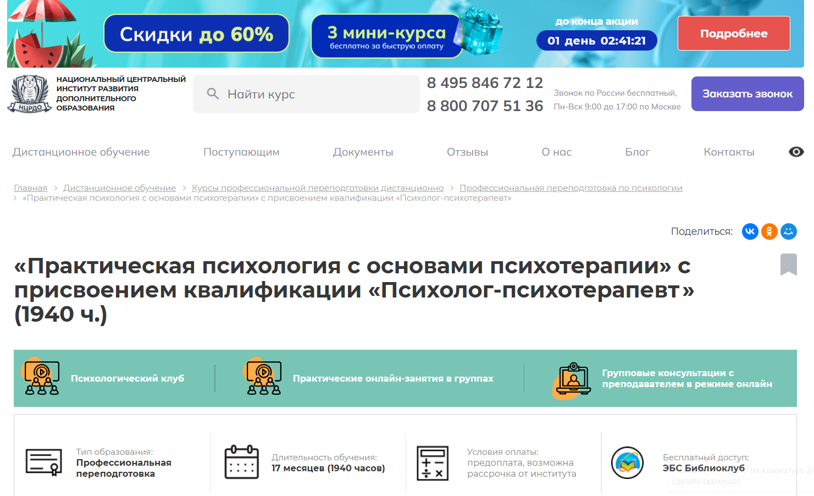
- ✅ Официальный сайт: ncrdo.ru
- 💸 Цена: 93 100 ₽ (вместо 167 600 ₽).
- 💳 Рассрочка: от института или банка — от 2 586 ₽/мес на 36 месяцев.
- 📚 Формат: дистанционный курс, лекции, вебинары, практические задания, тесты, междисциплинарный экзамен, доступ к ЛитРес и Библиоклубу.
- ⏳ Продолжительность: 17 месяцев (1940 часов).
- 📜 Документ: диплом о профессиональной переподготовке установленного образца с регистрацией в федеральном реестре.
- 📝 Трудоустройство: HR-консультации, поддержка в развитии карьеры, возможность частной практики.
- 🔷 Для кого подходит курс: для тех, кто хочет получить профессию психолога, пройти профессиональную переподготовку или начать карьеру в сфере психологических услуг.
Особенности:
Курс создан специально для освоения прикладных знаний в сфере клинической и практической психологии. Он включает практическую отработку навыков консультирования, психотерапевтических техник и методов психологической диагностики. Студенты осваивают психологическое консультирование в онлайн формате, изучают методы работы в семейной терапии и кризисной психологии. Все обучение проходит в дистанционном формате, что делает его удобным и доступным. Материалы адаптированы для легкого усвоения, а студенты получают доступ к платформе с вебинарами, методичками и дополнительными ресурсами. После окончания обучения выдается диплом с занесением в федеральную информационную систему.
Чему учатся студенты:
- Проводить психологическую диагностику личности
- Работать с клиентами в дистанционном и очном формате
- Применять методы семейного консультирования и психотерапии
- Оказывать психологическую поддержку при ПТСР, зависимостях, депрессии и тревожных расстройствах
- Владеть техниками групповой и индивидуальной терапии
- Использовать современные методы консультирования и психокоррекции
Преподаватели:
- Камышникова Анна Валерьевна — опыт научно-практической деятельности с 1996 года
- Зорина Александра Игоревна
- Ханина Анна Владимировна — опыт с 2010 года
- Нарожная Галина Борисовна — практикует с 2011 года
Преимущества:
- Освоение профессии практического психолога в дистанционном формате
- Практические занятия с реальными кейсами и клиентами
- Поддержка опытных преподавателей и кураторов
- Доступ к платформе с дополнительными материалами и вебинарами
- Возможность совмещать обучение с работой
- Регистрация диплома в государственном реестре
- Помощь выпускникам в трудоустройстве
- Гибкий график выполнения заданий
Отзывы учеников:
Студенты высоко оценивают удобный формат дистанционного обучения и насыщенность программы. Отмечают полезность практических занятий и возможность применять знания сразу после прохождения курса. Большинство положительных отзывов касается индивидуального подхода преподавателей, качества учебных материалов и доступной подачи сложных тем.
Перейти на официальный сайт курса10. Практическая психология – МШПП (Международная школа практической психологии)
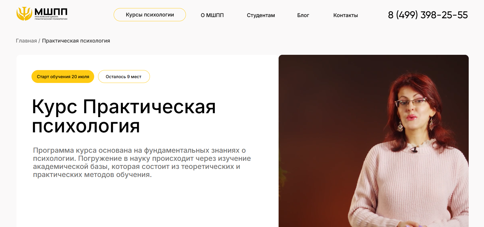
- ✅ Официальный сайт: mspp.online
- 💸 Цена: от 140 000 ₽ до 240 000 ₽ (в зависимости от тарифа, возможны скидки до 40%).
- 💳 Рассрочка: от 3 900 ₽/мес, от 3 до 36 месяцев без переплат от банков-партнеров.
- 📚 Формат: дистанционный курс — видеолекции, практические задания, вебинары, супервизии, очные практикумы.
- ⏳ Продолжительность: 10 месяцев, включая итоговую аттестацию, доступ к материалам сохраняется навсегда.
- 📜 Документ: диплом о профессиональной переподготовке установленного образца и международный диплом MBA.
- 📝 Трудоустройство: поддержка карьерного центра, сопровождение до окончания испытательного срока.
- 🔷 Для кого подходит курс: начинающие, действующие практикующие и семейные психологи, студенты и руководители, желающие освоить новые профессиональные навыки.
Особенности:
Курс ориентирован на освоение профессии практического психолога в удобном дистанционном формате. Обучение охватывает клиническую психологию, навыки консультирования, методы диагностики и техники работы с клиентами. Программа включает модули по семейной терапии, организационной психологии и профилактике выгорания. Учащиеся проходят супервизии и работают с реальными клиентами. Обратная связь от кураторов и менторов позволяет отработать практические навыки. После окончания курса выдается международный диплом, признанный работодателями по всему миру.
Чему учатся студенты:
- Проводить психологическую диагностику личности
- Работать с запросами в рамках семейной психотерапии и консультирования
- Применять методы профориентации и психодиагностики
- Организовывать групповые занятия и тренинги
- Вести онлайн-консультации и развивать личный бренд
- Оказывать квалифицированную психологическую помощь
Преподаватели:
- Ирина Осипенко — кандидат психологических наук, доцент
- Анна Шавырина — кандидат психологических наук
- Анфиса Корнеева — дипломированный практикующий психолог
- Мария Березина — клинический и консультативный психолог
- Инна Кылымник — рекомендованный гештальт-терапевт, супервизор
Преимущества:
- Доступ к курсу навсегда, включая обновления и дополнительные материалы
- Возможность начать карьеру психолога без предыдущего образования в сфере
- Малые группы до 5 человек для эффективной практики
- Обширная программа из 19 модулей, охватывающая основные направления
- Поддержка 24/7 и индивидуальное сопровождение от менторов
- Включены модули по онлайн-консультированию и продвижению услуг
- Международная аккредитация и диплом MBA
- Практическое занятие с реальными клиентами и интервизиями
Отзывы учеников:
Студенты отмечают высокое качество видеоматериалов, гибкий дистанционный формат и практическую направленность занятий. Часто упоминают отзывчивость кураторов, сильную программу и полезные навыки, применимые в реальной работе с клиентами. Подчеркивается удобство платформы и возможность совмещения с работой или учебой.
Перейти на официальный сайт курса11. Практическая психология с дополнительной специализацией в области применения психотерапевтических технологий — Национальный институт информационных технологий и дистанционного профессионального образования (АНО "НИИДПО")
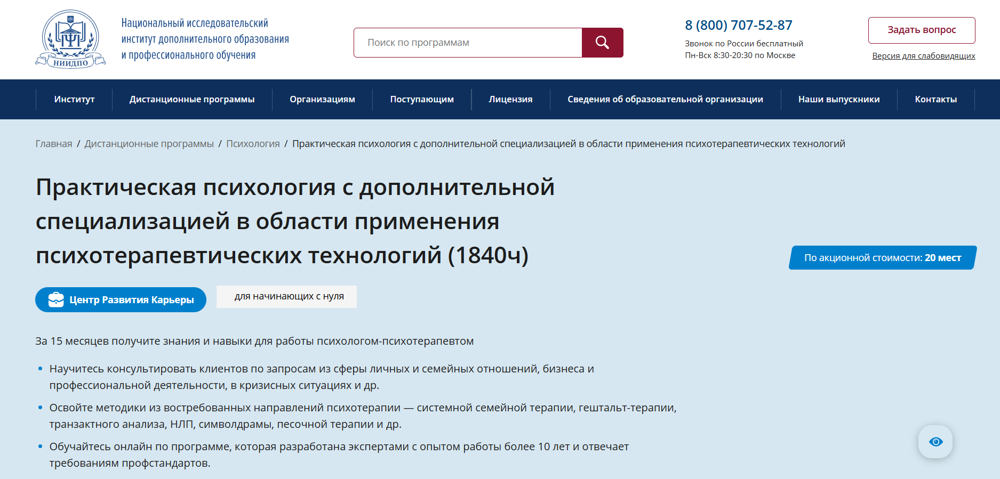
- ✅ Официальный сайт: niidpo.ru
- 💸 Цена: 88 800 ₽ (полная стоимость — 99 500 ₽)
- 💳 Рассрочка: 0%, от 8 295 ₽/мес на 12 месяцев без первого взноса
- 📚 Формат: дистанционный формат, видеолекции, тесты, практические задания, онлайн-вебинары, библиотека с 13 000+ записями
- ⏳ Продолжительность: 60 недель (возможно ускоренное обучение — 37 недель)
- 📜 Документ: диплом о профессиональной переподготовке, сертификат компетенций
- 📝 Трудоустройство: помощь Центра развития карьеры, доступ к вакансиям и консультациям по продвижению
- 🔷 Для кого подходит курс: начинающим специалистам, людям без опыта, практикующим специалистам в педагогике, HR и смежных профессиях
Особенности:
Программа ориентирована на получение практических навыков консультирования в онлайн формате, включая работу с запросами клиентов в семейной психотерапии, бизнесе и кризисных ситуациях. Студенты проходят обучение по современным направлениям психотерапии — от гештальт-терапии до НЛП. Осваиваются методы психологической диагностики и консультирования с акцентом на реальную практику. Слушатели получают доступ к записям вебинаров, библиотеке и поддержке карьерных консультантов. Обучение проводится полностью в дистанционном формате, что особенно удобно для совмещения с работой. Бонусом идет бессрочный доступ к материалам после получения диплома. Студенты активно развивают навыки консультирования с первых недель обучения.
Чему учатся студенты:
- Оценке психологического состояния и этапов развития личности
- Проведению психологической диагностики
- Психологическому консультированию в личной, семейной и профессиональной сферах
- Использованию методов гештальт-терапии, транзактного анализа, символдрамы и песочной терапии
- Анализу возрастных кризисов и разработке стратегий поддержки
- Основам психотерапии и коучинг-технологий
Преподаватели:
- Головина Наталия Андреевна — педагог-психолог, гештальт-терапевт
- Губарева Наталия Владимировна — практикующий медицинский психолог, специалист в работе с зависимым и созависимым поведением
- Заводилина Ольга Николаевна — психотерапевт, арт-терапевт, практикующий психолог
Преимущества:
- Дистанционный курс с возможностью ускоренного обучения
- Сразу две квалификации: практический психолог и психолог-психотерапевт
- Бессрочный доступ к учебным материалам
- Доступ к 13 000+ вебинарам, включая 1600+ по психологии
- Поддержка в карьерном росте и развитии личного бренда
- Практические задания и супервизии с разбором реальных кейсов
- Рассрочка без процентов и переплат
- Гибкий онлайн-формат с обучением в любое удобное время
Отзывы учеников:
Студенты отмечают высокое качество преподавания и внимание к каждому ученику. Особенно ценится практическая направленность курса, доступность материалов 24/7, поддержка преподавателей и карьерных консультантов. Выпускники хвалят удобный формат дистанционного обучения и реальную помощь в переходе в новую профессию.
Перейти на официальный сайт курса12. Психолог-консультант. Психологическое консультирование – Московская Бизнес Академия
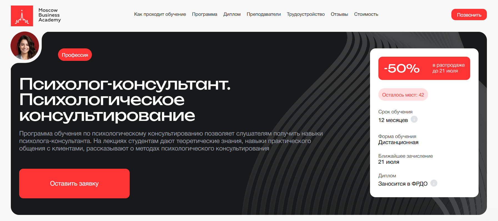
- ✅ Официальный сайт: moscow.mba
- 💸 Цена: 116 496 ₽ (со скидкой 50%)
- 💳 Рассрочка: 4 854 ₽/мес, до 24 месяцев, без переплаты, первый платёж через месяц
- 📚 Формат: дистанционный формат — лекции, тесты, практические задания, индивидуальные проекты, онлайн-вебинары
- ⏳ Продолжительность: 12 месяцев
- 📜 Документ: диплом о профессиональной переподготовке, внесён в ФРДО
- 📝 Трудоустройство: помощь с резюме, портфолио, вакансии, подготовка к собеседованиям
- 🔷 Для кого подходит курс: студенты, специалисты в медицине, соцсфере, клинические и семейные психологи, практикующие консультанты
Особенности:
Программа ориентирована на получение прикладных знаний в области психологического консультирования, включая семейную психотерапию и клиническую психологию. Обучение проходит полностью дистанционно — вы получаете доступ к лекциям, заданиям и обратной связи с преподавателями в любое удобное время. Учебный план актуализирован и включает темы, востребованные работодателями. Студенты осваивают не только теоретическую базу, но и практические навыки консультирования, участвуют в воркшопах, супервизиях, осваивают методы диагностики и арт-терапии. Все выпускники получают документы государственного образца и поддержку в трудоустройстве.
Чему учатся студенты:
- Навыкам консультирования в индивидуальной и групповой форме
- Методам психодиагностики и психологической поддержки
- Основам когнитивно-поведенческой и гештальт-терапии
- Проведению психологических исследований
- Применению клинической и возрастной психологии в практике
- Работе с запросами клиентов в рамках семейного консультирования
Преподаватели:
- Мария Егиазарова — выпускник МГУ, эксперт в социальной психологии и бизнес-консультировании
- Елена Дарменко — практикующий психолог-консультант с 20-летним опытом, член IACCP
- Андрей Гунявин — психоаналитик, специалист по глубинной терапии
Преимущества:
- Возможность совмещать обучение с работой благодаря удобному онлайн формату
- 70% курса — практические задания, приближённые к реальным клиентским кейсам
- Диплом заносится в официальный реестр — ФРДО
- Программа охватывает направления клинической, семейной и социальной психологии
- Индивидуальное сопровождение от кураторов и обратная связь от преподавателей
- Бонусные модули по управлению конфликтами, эмоциональному интеллекту и психологии здоровья
- Постобученческая поддержка и помощь в трудоустройстве
- Можно вернуть 13% от стоимости обучения через налоговый вычет
Отзывы учеников:
Выпускники часто отмечают сильную теоретическую подготовку и практическую направленность курса. Отзывы подчеркивают удобство дистанционного формата, компетентность преподавателей, а также высокий уровень поддержки на всех этапах обучения. Многие отмечают, что курс помог не только получить диплом, но и начать карьеру в сфере психологических услуг.
Перейти на официальный сайт курса13. Профессия психолог-консультант – Нетология
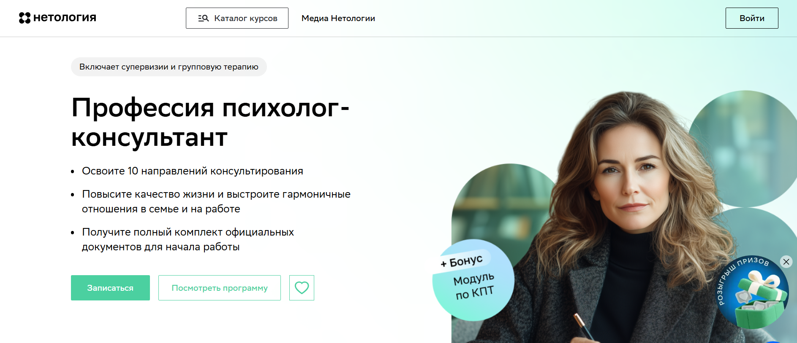
- ✅ Официальный сайт: netology.ru
- 💸 Цена: от 151 600 ₽ до 330 600 ₽ (с учётом скидки 40% )
- 💳 Рассрочка:от 4 433 ₽/мес , до 36 месяцев без переплат
- 📚 Формат: дистанционный курс, включает супервизии, групповую терапию, практические задания, спецкурсы, кейсы, GigaChat, чат с координатором
- ⏳ Продолжительность: 14 месяцев, 1100 часов
- 📜 Документ: диплом о профессиональной переподготовке, удостоверение о повышении квалификации по КПТ
- 📝 Трудоустройство: помощь с размещением профиля на сайтах-агрегаторах, упаковка портфолио, личные сессии и супервизии
- 🔷 Для кого подходит курс: начинающим, практикующим, выпускникам, интересующимся клинической психологией, семейной терапией, дистанционными образовательными программами
Особенности:
Программа создана для тех, кто хочет освоить профессию психолога с упором на практическую подготовку. Курс включает ключевые направления психологического консультирования и семейной психотерапии. В дистанционном формате проходят как теоретические модули, так и практические задания, позволяющие развивать навыки консультирования. Программа соответствует стандартам и требованиям профессиональной переподготовки. Студенты получают полное сопровождение — от групповых занятий до личных консультаций и поддержки координатора. Преподаватели — действующие специалисты с академическим уровнем и опытом. После завершения обучения слушатели получают дипломы и могут начать частную практику или работать онлайн. Обучение проходит в удобных форматах и подходит для совмещения с работой или семьёй.
Чему учатся студенты:
- Методам семейного консультирования и индивидуальной психотерапии
- Психологической диагностике и работе с запросами клиентов
- Выявлению тревожных расстройств, выгорания, ПТСР
- Гештальт-терапии, телесно-ориентированной, трансактному анализу
- Работе с первыми клиентами и продвижению услуг
Преподаватели:
- Ксения Кунникова — кандидат психологических наук, ведущий научный сотрудник нейромаркетинговой лаборатории, эксперт в нейрокогнитивных исследованиях
Преимущества:
- Возможность обучаться дистанционно в любом удобном месте
- Комплексная программа с упором на практическое применение знаний
- Супервизия и групповая терапия включены в стоимость обучения
- Два официальных документа по окончании курса
- Поддержка в построении личного бренда и онлайн-практики
- Помощь с регистрацией на профессиональных платформах
- Работа с реальными клиентами под контролем наставника
- Спецзанятие по GigaChat и общение в профессиональном чате
Отзывы учеников:
Студенты положительно оценивают качество образовательных программ, отмечают актуальность знаний и практическую направленность. Многие хвалят дистанционный формат, насыщенность курсов и поддержку преподавателей. Часто выделяют проработку практических навыков и профессиональное сопровождение до самого окончания курса.
Перейти на официальный сайт курса14. Психолог-практик: базовая клиентоориентированная стратегия и методы – Институт прикладной психологии в социальной сфере
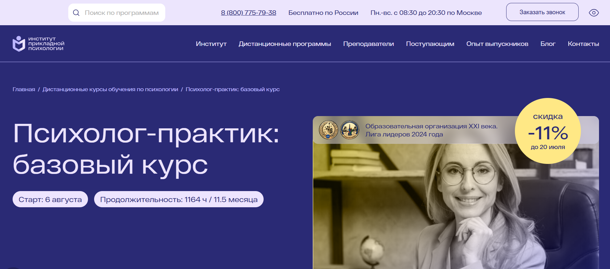
- ✅ Официальный сайт: ippss.ru
- 💸 Цена: от 87 400 ₽ (скидка -11% )
- 💳 Рассрочка: 8 150 ₽/мес, 0% от банка или Яндекс Пэй
- 📚 Формат: дистанционный курс, включает лекции, практические задания, супервизии, тестирования, вебинары, психологический практикум
- ⏳ Продолжительность: 11,5 месяцев (1164 ак. часов)
- 📜 Документ: диплом о профессиональной переподготовке с квалификацией «Практический психолог»
- 📝 Трудоустройство: стажировки у партнеров, карьерные консультации, помощь в выходе на частную практику
- 🔷 Для кого подходит курс: для желающих освоить профессию психолога без профильного образования, студентов и специалистов из смежных сфер
Особенности:
Обучение проходит в дистанционном формате и не требует высшего психологического образования. Студенты получают доступ к практическим инструментам и методам психологической помощи, основанным на клинической психологии и семейной терапии. Программа включает изучение прикладных дисциплин, этики, методов психологического консультирования и практических заданий с обратной связью. Студенты проходят супервизию, отрабатывают навыки консультирования в мини-группах, получают доступ к вебинарам и учебным материалам 24/7. После завершения обучения выдается официальный диплом, зарегистрированный в ФИС ФРДО.
Чему учатся студенты:
- Применять методы психологической помощи
- Проводить психологическую диагностику и консультирование
- Работать с клиентами в рамках семейной психотерапии и индивидуальной поддержки
- Проводить тренинги и обучающие сессии
- Анализировать кейсы из практики и отрабатывать практические навыки консультирования
Преподаватели:
- Дорофеева Елена Владимировна — эксперт в области профессиональной этики и практической психологии
- Плющева Ольга Александровна — клинический психолог, супервизор, преподаватель
- Пустыльникова Виктория Юрьевна — практикующий психолог, немедицинский психотерапевт, преподаватель
- Тимофеева Анастасия Александровна — аккредитованный полимодальный психотерапевт, обучающий личный терапевт
Преимущества:
- Можно пройти обучение без профильного образования
- Получаете диплом, который дает право на официальную практику
- Гибкий формат с доступом к материалам в любое удобное время
- Возможность стажировок и карьерного роста после окончания курса
- Освоение практических навыков под контролем опытных преподавателей
- Поддержка кураторов и техподдержки на всем этапе обучения
- Более 2000 записей вебинаров и доступ к онлайн-мероприятиям
- Обучение продвижению и развитию частной практики
Отзывы учеников:
Слушатели отмечают высокий уровень поддержки и профессионализм преподавателей. Часто подчеркивается полезность практических занятий и доступность материала. Многие студенты начали частную практику после завершения курса и говорят о положительном влиянии на личную и профессиональную жизнь.
Перейти на официальный сайт курса15. Практическая психология — Институт Профессионального образования
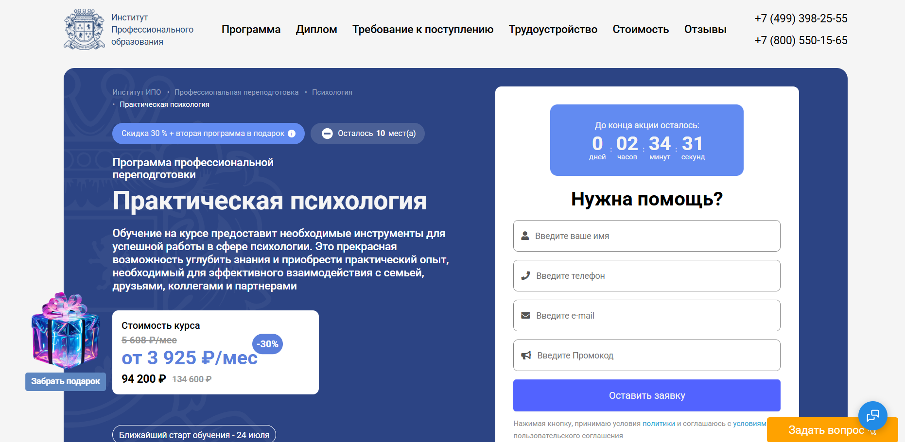
- ✅ Официальный сайт: ipo.msk.ru
- 💸 Цена обучения: 94 200 ₽ со скидкой 30%.
- 💳 Рассрочка:от 5 608 ₽/мес, предоставляется без переплат.
- 📚 Формат: дистанционный курс с видеолекциями, тестами и практическими заданиями.
- ⏳ Продолжительность: индивидуально, зависит от темпа прохождения.
- 📜 Документ: диплом о профессиональной переподготовке установленного образца.
- 📝 Трудоустройство: повышение шансов на работу в области психологического консультирования и терапии.
- 🔷 Для кого подходит курс: для тех, кто хочет освоить профессию психолога или получить дополнительные профессиональные навыки в сфере практической психологии.
Особенности:
Обучение проводится полностью онлайн, что удобно для слушателей с плотным графиком. Студенты проходят курс в удобном формате, получая доступ к современным образовательным материалам. Программа включает практические задания и ориентирована на формирование устойчивых профессиональных навыков. Подходит для тех, кто хочет пройти профессиональную переподготовку по направлению клинической и семейной психологии. Обучение построено с учетом стандартов дистанционных образовательных программ и помогает студентам освоить методы психологической поддержки и консультирования. После завершения обучения выпускники получают диплом, подтверждающий их квалификацию. Количество мест ограничено.
Чему учатся студенты:
- Навыкам психологического консультирования
- Методам семейной терапии и диагностики
- Проведению психологической консультации в дистанционном формате
- Пониманию основ клинической психологии
- Применению практических навыков в работе с клиентами
- Организации работы с индивидуальными и групповыми запросами
Преподаватели:
- Глушкова Наталья Викторовна — клинический психолог, специалист в области семейного консультирования
- Лаврова Юлия Сергеевна — практикующий психолог, опыт преподавания более 10 лет
- Семенов Артем Павлович — преподаватель психологии, эксперт по дистанционным образовательным программам
Преимущества:
- Подходит для освоения новой профессии в краткие сроки
- Обучение в дистанционном формате — подходит для любого графика
- Скидка 30% и вторая программа в подарок
- Доступ к учебным материалам на протяжении всего курса
- Программа включает практическое занятие по каждому модулю
- Возможность освоить навыки консультирования и психодиагностики
- Сильный преподавательский состав с реальной практикой
- Гибкий график обучения и поддержки куратора
Отзывы учеников:
Студенты часто отмечают удобный формат обучения, высокую квалификацию преподавателей и насыщенность практическими заданиями. Положительно оцениваются индивидуальный подход, актуальность материалов и возможность совмещать обучение с работой. Большинство выпускников довольны тем, как курс помог им получить профессию психолога или улучшить навыки в консультировании.
Перейти на официальный сайт курса16. Практическая психология. Психотерапевтические технологии в работе психолога – Центральная академия профессиональной переподготовки и повышения квалификации кадров (ЦАППКК)
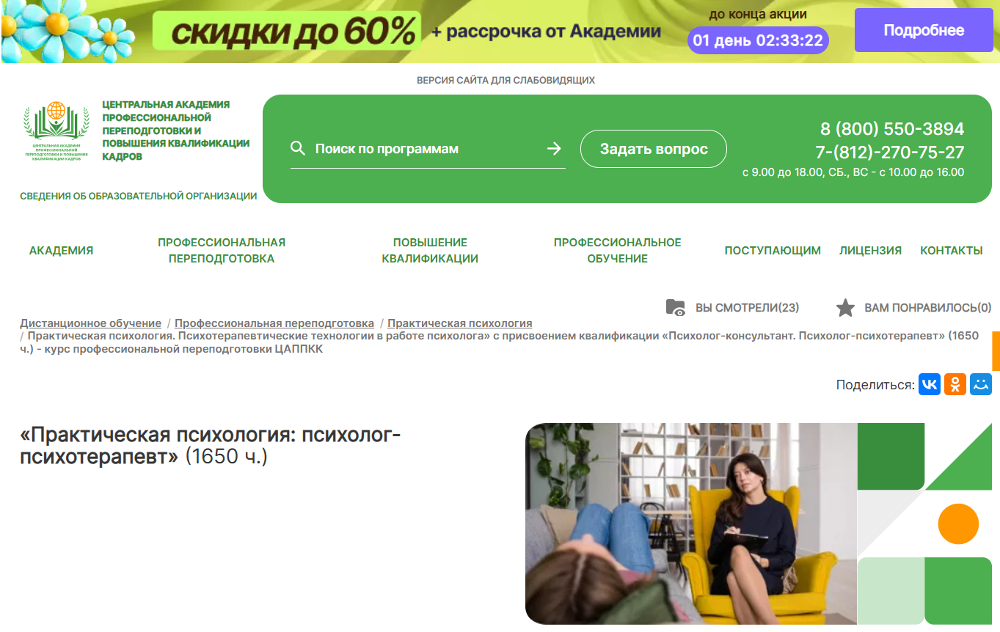
- ✅ Официальный сайт: appkk.ru
- 💸 Цена: 87 600 ₽ ( обычная цена — 107 100 ₽).
- 💳 Рассрочка: от 2 433 ₽ в месяц на 36 месяцев (Т-банк, Сбер).
- 📚 Формат: заочный дистанционный формат — видеоуроки, вебинары, тесты, контрольные задания, доступ к лекциям 24/7, библиотека БиблиоКлуб.
- ⏳ Продолжительность: 15 месяцев (1650 часов).
- 📜 Документ: диплом о профессиональной переподготовке с занесением в ФИС ФРДО.
- 📝 Трудоустройство: поддержка HR-наставника, помощь в составлении резюме и поиске работы, онлайн-консультации.
- 🔷 Для кого подходит курс: начинающим и практикующим психологам, выпускникам психолого-педагогических направлений, специалистам, желающим получить навыки консультирования и диплом.
Особенности:
Программа разработана под профессиональные стандарты и ФГОС, включает современные методы психологического консультирования и психотерапии. Все этапы обучения проходят в дистанционном формате с доступом к материалам в любое удобное время. Студенты получают поддержку от преподавателя и техподдержки без выходных. Курс позволяет совмещать обучение с работой. Доступ к лекциям сохраняется и после окончания курса. Академия предоставляет документы государственного образца и гарантирует занесение данных в федеральный реестр. Слушателям доступна помощь в карьерном росте и подборе вакансий.
Чему учатся студенты:
- Методам психологической диагностики и коррекции
- Навыкам консультирования и психотерапевтической помощи
- Построению эффективного взаимодействия с клиентами
- Работе в области семейной психотерапии и консультирования
- Практическому применению психологии в индивидуальной и групповой терапии
Преподаватели:
- Анастасия Регнер — HR-наставник, бизнес-тренер, участник международных форумов, эксперт в области стратегических коммуникаций, автор программ по рекрутингу
Преимущества:
- Обучение проводится в удобном дистанционном формате
- Пожизненный доступ к лекциям и библиотеке вебинаров
- Документы вносятся в ФИС ФРДО
- Доступная стоимость с возможностью беспроцентной рассрочки
- Поддержка HR-специалиста по вопросам трудоустройства
- Курс подходит как для начинающих, так и для практикующих психологов
- Современная программа на основе актуальных методик
- Техподдержка доступна ежедневно с 9:00 до 21:00
Отзывы учеников:
Слушатели отмечают качественное содержание курса, удобный формат дистанционного обучения и поддержку преподавателей. Также студенты положительно отзываются о помощи в трудоустройстве и возможности совмещать обучение с работой. Особо подчеркивается актуальность знаний и навыков, получаемых в рамках программы.
Перейти на официальный сайт курса17. Практический психолог – Учебный центр дополнительного профессионального образования ЭКОДПО
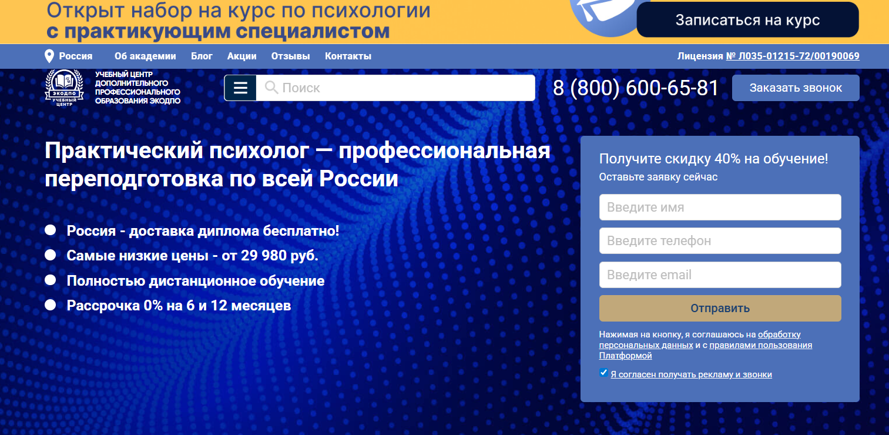
- ✅ Официальный сайт: ecodpo.ru
- 💸 Цена: от 29 980 ₽ (со скидкой 40%)
- 💳 Рассрочка: 2 498 ₽/мес, 0% на 6 и 12 месяцев
- 📚 Формат: дистанционный формат: видеоматериалы, онлайн-задания, итоговое тестирование
- ⏳ Продолжительность: от 256 часов, можно пройти за 1,5–2 месяца
- 📜 Документ: диплом о профессиональной переподготовке с регистрацией в ФИС ФРДО
- 📝 Трудоустройство: официальное признание диплома, возможность работы в сфере психологического консультирования
- 🔷 Для кого подходит курс: для лиц с высшим или средним профессиональным образованием, планирующих смену профессии или развитие навыков
Особенности:
Программа нацелена на развитие практических навыков в области психологического консультирования. Обучение проходит полностью дистанционно, что дает слушателям свободу выбора времени и места. Поддержка осуществляется через личный кабинет и индивидуальные консультации. В структуру включены ключевые дисциплины: диагностика, консультирование, методы работы со стрессом. Диплом соответствует 273-ФЗ и вносится в федеральную систему учета. Документы высылаются по всей России бесплатно, включая труднодоступные регионы. Возможна оплата частями без переплат. При необходимости разрабатывается индивидуальная программа обучения. Все материалы доступны 24/7.
Чему учатся студенты:
- Проводить психологическую диагностику клиентов
- Оказывать психологическую поддержку и консультирование
- Использовать методы коррекционной психологии
- Работать с семейными и личностными проблемами
- Применять современные подходы клинической психологии
- Анализировать стрессовые состояния и находить решения
- Вести индивидуальные и дистанционные консультации
Преподаватели:
- Актуальные ФИО преподавателей не указаны на сайте ecodpo.ru. Обратитесь за информацией напрямую через контактную форму или по телефону 8 (800) 222-70-59.
Преимущества:
- Быстрое оформление документов — диплом готов уже через 1 день после оплаты
- Гарантированная бесплатная доставка по всей России
- Без вступительных экзаменов
- Можно учиться без отрыва от работы
- Курс подходит как для начинающих, так и для специалистов смежных профессий
- Программа соответствует актуальным стандартам дополнительного профессионального образования
- Доступ ко всем материалам — круглосуточно
- Индивидуальный подход: возможна корректировка учебного плана
Отзывы учеников:
Слушатели часто отмечают: простоту в процессе обучения, профессиональную поддержку кураторов, доступность материалов и гибкость расписания. Особо выделяют быстрый выпуск дипломов, возможность начать обучение без ожидания группы и простую рассрочку без переплат. Многие уже успешно применяют полученные знания в частной практике и социальных учреждениях.
Перейти на официальный сайт курса18. Практическая психология для себя – Академия Эдюсон
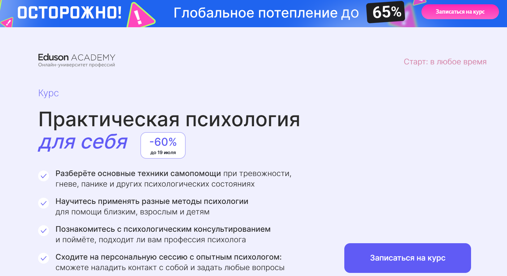
- ✅ Официальный сайт: eduson.academy
- 💸 Цена: 65 520 ₽/мес со скидкой 60% , полная стоимость 159 996 ₽
- 💳 Рассрочка: доступна, 5460 ₽/мес на 12 месяцев (без скидки — 13 333 ₽/мес)
- 📚 Формат: дистанционный формат — видеолекции, интерактивные конспекты, индивидуальная диагностика, практические задания, бонусные блоки
- ⏳ Продолжительность: 58 часов теории, доступ навсегда
- 📜 Документ: диплом Академии Эдюсон после прохождения курса
- 📝 Трудоустройство: первая консультация с экспертом, помощь в выборе специализации и старт в профессии
- 🔷 Для кого подходит курс: тем, кто хочет разобраться в себе, наладить отношения с близкими и изучить основы профессии психолога
Особенности:
Программа разработана практикующими специалистами и адаптирована под современные стандарты психологического консультирования. Участники смогут освоить практические навыки самопомощи и помочь близким в трудных ситуациях. Курс дает представление о профессии психолога и включает индивидуальную консультацию с экспертом. Формат онлайн подходит для совмещения с работой и учебой. Все материалы обновляются и доступны без ограничений по времени. Доступна опция подарочной консультации. Студенты осваивают методы психологической поддержки, которые применимы в реальных жизненных ситуациях.
Чему учатся студенты:
- Оказывать психологическую помощь при тревожности, панике, гневе и выгорании
- Применять методы психологии в семейных и рабочих отношениях
- Понимать основы клинической психологии и консультирования
- Работать с эмоциональным интеллектом и навыками планирования
- Проводить первичную психологическую диагностику
- Определять направления в психологической практике
Преподаватели:
- Яна Новикова — практикующий психолог, EMDR-терапевт, mindfulness-тренер
- Анна Лозинина — клинический психолог, руководитель Центра семейной психологии
- Мила Кудрякова — сертифицированный психолог, автор YouTube-канала
- Маргарита Даревская — психолог Британского психологического общества
- Евгения Заволокина — гештальт-терапевт, кандидат в групповые аналитики EGATIN
- Ирина Дайнеко — психотерапевт, преподаватель медицинского университета
- Ольга Александрова — преподаватель в модальности «Эмоционально-образная терапия»
- Евгений Идзиковский — психолог и психотерапевт (Оксфорд)
- Елена Резепова — клинический психолог, специалист в социальной психологии
- Екатерина Мешкова — руководитель образовательных программ сервиса «Ясно»
- Анна Скворцова — психолог, коуч, спортивный психолог
- Анна Полякова — этнопсихолог, карьерный консультант
Преимущества:
- Дистанционный курс с удобным форматом занятий
- Доступ к материалам после окончания курса
- Индивидуальная онлайн-консультация с опытным психологом
- Программа построена на актуальных методах
- Диплом академии, подтверждающий квалификацию
- Бонусные блоки по планированию и эмоциональному интеллекту
- Возможность начать обучение в любое время
- Курс подходит для личного развития и первого шага в новую профессию
Отзывы учеников:
Студенты хвалят курс за профессиональный подход, сильную экспертную команду и возможность применять знания сразу после прохождения. Особенно часто отмечают персональный созвон с психологом и структурированную подачу материала. Многие рекомендуют курс как стартовую точку для карьеры в сфере психологических услуг и личного роста.
Перейти на официальный сайт курса19. Обучение профессии психолога — Академия EDPRO
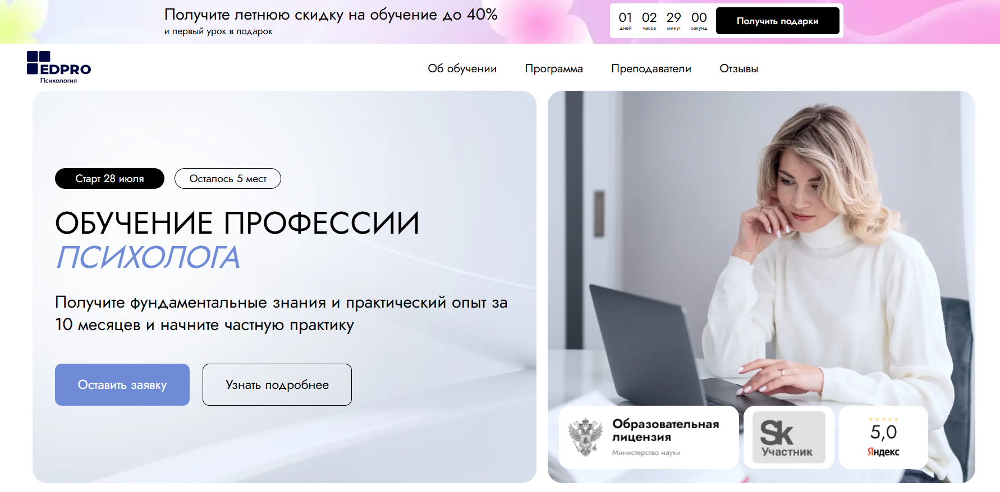
- ✅ Официальный сайт: edprodpo.com
- 💸 Цена обучения: от 140 760 ₽ со скидкой до 40%
- 💳 Рассрочка:от 5 865 ₽/мес до 24 месяцев без переплат, первый платеж — со второго месяца
- 📚 Формат: дистанционный курс с практическими заданиями, лекциями, тестами и консультациями
- ⏳ Продолжительность: 10 месяцев
- 📜 Документ: диплом установленного образца и международный диплом MBA
- 📝 Трудоустройство: подготовка к частной практике и работа с клиентами после завершения обучения
- 🔷 Для кого подходит курс: для желающих пройти профессиональную переподготовку, получить навыки консультирования и начать карьеру в сфере клинической и семейной психологии
Особенности:
Курс проводится в дистанционном формате, что делает его доступным для слушателей из любой точки страны. Программы лицензированы и соответствуют ФГОС ВО 370301. Студенты проходят углубленное обучение методам психологического консультирования и получают более 50 подробных слайдов с материалами. На старте предусмотрены бесплатные психологические консультации. Благодаря сотрудничеству с практикующими специалистами курс даёт возможность получить реальные навыки работы с запросами клиентов. После прохождения обучения выпускники получают два диплома и возможность начать частную практику.
Чему учатся студенты:
- Методам клинической психологии и семейной терапии
- Проведению психологической диагностики и консультаций
- Навыкам консультирования и работе с клиентскими запросами
- Применению современных подходов в практической психологии
- Психологическому сопровождению в формате онлайн и офлайн
Преподаватели:
- Алина Степанчук — автор программы
- Анетта Орлова — преподаватель, психолог
- Анна Якушенко — клинический и семейный психолог
- Елена Гамзина — практический психолог, экс-президент СОТА
- Елена Станковская — психолог-консультант, кандидат психологических наук
- Виктория Морева — консультант, полимодальный супервизор
- Анна Громченко — коуч, член СОТА и ЕАТА
- Дарья Ясная — психолог-консультант, коуч
Преимущества:
- Возможность освоить профессию психолога без отрыва от основной деятельности
- Дистанционный формат обучения с гибким расписанием
- Еженедельные практические занятия с опытными преподавателями
- Бесплатные консультации с выпускниками на старте
- Получение сразу двух дипломов: российского и международного
- Программы соответствуют профессиональным стандартам и ФГОС
- Глубокое обучение с практическим применением знаний
- Комфортная рассрочка без переплат
Отзывы учеников:
Слушатели отмечают высокую квалификацию преподавателей и большое количество практических занятий. Также выделяют удобный дистанционный формат, понятную структуру уроков и реальную подготовку к частной практике. Многие отмечают, что после прохождения курса уверенно начали консультировать клиентов.
Перейти на официальный сайт курса20. Психолог-консультант – Международная школа профессий
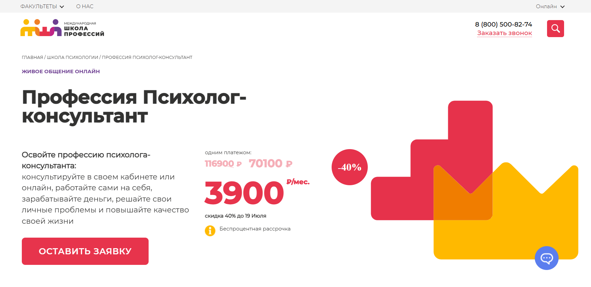
- ✅ Официальный сайт: online.videoforme.ru
- 💸 Цена: 70 100 ₽ (скидка 40% ).
- 💳 Рассрочка: от 3 900 ₽ в месяц, без процентов.
- 📚 Формат: дистанционный формат: видеолекции, вебинары, задания, обратная связь, поддержка наставников.
- ⏳ Продолжительность: 64 недели, 170 академических часов.
- 📜 Документ: диплом о профессиональной переподготовке, возможен международного образца.
- 📝 Трудоустройство: помощь в старте частной практики, продвижении и создании личного проекта.
- 🔷 Для кого подходит курс: для тех, кто хочет получить профессию психолога, начать практику или развивать профессиональные навыки в психологическом консультировании.
Особенности:
Программа обучения ориентирована на получение профессиональных знаний и освоение практических навыков консультирования. Студенты проходят обучение дистанционно в удобном формате, совмещая процесс с работой или личной жизнью. Занятия включают теорию, практическое задание, супервизию и работу с реальными кейсами. Поддержка осуществляется опытными специалистами в области клинической психологии и психотерапии. Также предусмотрены возможности пройти курс за счёт соцпрограмм, использовать налоговый вычет или оплату через материнский капитал. По завершении выпускники получают диплом, позволяющий работать в сфере психологических услуг.
Чему учатся студенты:
- Проводить психологическое консультирование онлайн и офлайн
- Использовать методы психодиагностики и интерпретации результатов
- Работать с тревогой, паническими атаками, семейными и возрастными кризисами
- Понимать основы клинической психологии и выявлять пограничные состояния
- Осваивать методы семейной терапии и консультирования
- Создавать личный бренд и продвигать психологические услуги
Преподаватели:
- Елизавета Астанина — более 10 лет опыта, коуч, НЛП-мастер, регрессолог, провела более 300 трансформаций жизни
- Ирина Керницкая — бизнес-психоаналитик, наставник начинающих, преподаватель с практикой более 5 лет
- Александра Федорова — эксперт в тревожно-депрессивных расстройствах, член Ассоциации экспертов эмоционального интеллекта
- Надежда Дмитриева — КПТ-терапевт с практикой более 3,5 лет, клинический психолог
- Алла Логинова — коуч, игротерапевт, ведущая трансформационных игр, обучила более 100 специалистов
Преимущества:
- Фокус на практическом применении навыков консультирования
- Дистанционный курс с доступом к материалам в любое время
- Возможность совмещать с работой, учёбой и путешествиями
- Наставничество от практикующих психологов
- Гибкий график обучения и поддержка на всех этапах
- Подходит для начала частной практики
- Выдача диплома международного образца по запросу
- Оплата возможна через соцпрограммы и материнский капитал
Отзывы учеников:
Студенты отмечают насыщенное содержание курса, удобный формат онлайн-занятий и высокий уровень преподавателей. Многие подчеркивают пользу от практических заданий и участие в реальных консультациях. Положительно выделяется поддержка наставников и возможность быстро начать карьеру в сфере психологических услуг.
Перейти на официальный сайт курса21. Практическая психология: основы диагностики и психологического консультирования личности — Московский институт психоанализа и Высшая школа «Среда обучения»
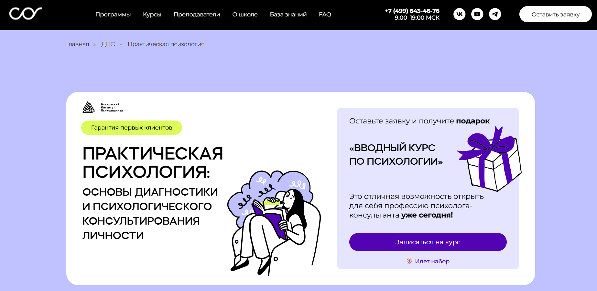
- ✅ Официальный сайт: psychology.sredaobuchenia.ru
- 💸 Цена: от 217 900 ₽
- 💳 Рассрочка: от 6 052 ₽ в месяц, доступна беспроцентная рассрочка
- 📚 Формат: дистанционный курс: видеоуроки, практические задания, доступ к лекциям, сопровождение куратора
- ⏳ Продолжительность: индивидуальный темп, стандартно до 12 месяцев
- 📜 Документ: два диплома о профессиональной переподготовке: от Московского института психоанализа и от школы «Среда обучения»
- 📝 Трудоустройство: помощь с первыми клиентами, карьерный центр, шаблоны для продвижения
- 🔷 Для кого подходит курс: начинающим и практикующим психологам, специалистам помогающих профессий, людям, желающим сменить сферу деятельности
Особенности:
Курс ориентирован на тех, кто хочет освоить профессию психолога-консультанта через дистанционное обучение с акцентом на практические навыки. Программа полностью соответствует требованиям ФГОС и профессиональным стандартам. Обучение ведется на современной образовательной платформе, а преподаватели являются действующими специалистами в сфере клинической и практической психологии. Студенты получают доступ к базе знаний, инструментам консультирования и юридическим материалам. Возможность обучения в любом темпе позволяет совмещать процесс с основной работой. Выпускники получают поддержку в поиске клиентов и выходе на рынок психологических услуг.
Чему учатся студенты:
- Проводить психологическую диагностику и консультирование
- Оказывать психологическую помощь при семейных конфликтах
- Использовать методы семейной терапии, арт-терапии, гештальт-подхода
- Диагностировать личностные особенности на разных этапах развития
- Организовывать индивидуальное и групповое консультирование
- Работать с нормативно-правовыми аспектами профессии
Преподаватели:
- Наталия Хаймовская — канд. психол. наук, доцент, сертифицированный гештальт- и психодраматерапевт
- Екатерина Крупецкая — психолог-консультант, групповой психотерапевт, кандидат социологических наук
- Анна Шихер — преподаватель индивидуального и группового консультирования, член Ассоциации КПТ
- Галина Лайшева — канд. психол. наук, клинический психолог, преподаватель клинической психологии
Преимущества:
- Два диплома о профессиональной переподготовке
- Дистанционный формат обучения с доступом ко всем материалам
- Карьерный центр и поддержка в продвижении
- Актуальные подходы в семейной психотерапии и консультировании
- Гибкий график — учитесь в удобное время
- Работа с реальными кейсами и практическими задачами
- Поддержка кураторов и преподавателей в течение всего курса
Отзывы учеников:
Студенты чаще всего отмечают практическую направленность программы, доступность дистанционного формата, профессионализм преподавателей и помощь в запуске частной практики. Положительно оценивают сопровождение кураторов и возможность сразу применять знания на практике.
Перейти на официальный сайт курсаКто такой практический психолог?
Это специалист, работающий напрямую с людьми, помогая решать личные, профессиональные, семейные и поведенческие проблемы. В отличие от теоретических исследователей, он применяет психологические знания в реальной жизни: в школах, клиниках, компаниях и частной практике.
Главная цель практического психолога — улучшить качество жизни клиента, помочь справиться с эмоциональными трудностями, повысить самооценку, разрешить внутренние конфликты и наладить коммуникации.
Что делают практические психологи и чем они занимаются?
Работа практического психолога может охватывать множество сфер: от образования до бизнеса. Их деятельность зависит от специализации, но основные направления включают:
- Индивидуальное и групповое консультирование
- Психодиагностика — тестирование личности, интеллекта, эмоционального состояния
- Психокоррекция — работа с травмами, страхами, зависимостями
- Профориентация и карьерный коучинг
- Семейное консультирование и медиация конфликтов
- Работа с детьми и подростками (в школах и детсадах)
- Организация тренингов и семинаров по развитию личности
Психологи могут работать как в государственных учреждениях, так и вести частную практику.
Что должен знать и уметь практический психолог?
Хороший практический психолог должен обладать не только знаниями в области психологии, но и высоким уровнем эмпатии, стрессоустойчивостью и этикой общения. Важно также:
- Знать теории личности, поведения и психических процессов
- Уметь применять методы психодиагностики и коррекции
- Понимать специфику работы с разными возрастными и социальными группами
- Быть способным вести документацию и соблюдать конфиденциальность
- Иметь навык активного слушания и задавания корректных вопросов
Современный специалист также должен разбираться в цифровых инструментах для онлайн-консультирования и продвижения своих услуг.
Востребованность и зарплаты практических психологов в России
Спрос на практических психологов в России продолжает расти. Это связано с ростом осознанности, интереса к ментальному здоровью и распространением удаленной работы.
- Средняя зарплата практического психолога — от 50 000 до 100 000 рублей в месяц
- В частной практике доход может достигать 150 000–300 000 рублей при стабильном потоке клиентов
- В образовательных и социальных учреждениях — от 40 000 рублей
- В HR-сфере и корпоративной психологии — от 80 000 рублей
Наибольший спрос наблюдается в крупных городах: Москва, Санкт-Петербург, Казань, Екатеринбург. Однако онлайн-консультации позволяют зарабатывать из любого региона.
Как стать практическим психологом и где учиться?
Чтобы стать практическим психологом, необходимо получить профильное образование и практический опыт. Путь включает следующие этапы:
- Поступление в вуз по направлению «Психология»
- Окончание бакалавриата (4 года) или специалитета (5 лет)
- Прохождение дополнительной подготовки (курсы, стажировки, супервизия)
- Регистрация в профессиональных сообществах
Рекомендуемые вузы:
- МГУ им. Ломоносова
- СПбГУ
- ВШЭ
- МГППУ (Московский городской психолого-педагогический университет)
Также популярны курсы переподготовки (от 6 месяцев) для специалистов смежных профессий (педагоги, медики, соцработники).
Кому подходит профессия?
Профессия подходит тем, кто:
- Любит работать с людьми и помогает им решать проблемы
- Готов к постоянному обучению и личностному росту
- Обладает терпением, эмпатией и высокой этической ответственностью
- Интересуется человеческой природой, мотивацией и поведением
Важно быть готовым к эмоциональной нагрузке и уметь отделять профессиональную деятельность от личной жизни.
Перспективы карьеры и развития в профессии
У практического психолога есть множество путей развития:
- Открытие частной практики и собственного кабинета
- Создание авторских тренингов и онлайн-курсов
- Работа в международных проектах и НКО
- Развитие в области психотерапии или коучинга
- Становление супервизором или преподавателем психологии
Профессия остается одной из самых «гибких» и адаптивных к меняющемуся миру. С правильной подготовкой и настойчивостью она может приносить не только доход, но и глубокое чувство удовлетворения от помощи другим.
Какие форматы обучения доступны для будущих практических психологов?
Доступны разные форматы обучения, включая дистанционный формат, дистанционные курсы, онлайн формат и очные занятия. Дистанционные образовательные программы позволяют учиться в любое удобное время, совмещая учебу с работой или семьей.
Чем отличается практический психолог от клинического?
Практический психолог специализируется на психологическом консультировании, работе с личными, семейными и социальными запросами. Клинический психолог работает в области клинической психологии, разбирается в психических расстройствах и часто сотрудничает с медицинскими учреждениями.
Как проходит дистанционное обучение?
Дистанционное обучение включает в себя вебинары, видеолекции, практические задания и супервизии. Благодаря дистанционному формату, обучение проводится в удобном формате, часто с доступом к материалам 24/7.
Какие дипломы получают выпускники после окончания обучения?
После завершения обучения слушатели получают дипломы установленного образца, в том числе дипломы государственного образца, подтверждающие профессиональную квалификацию и право на психологическую практику.
Какие методы психологической работы изучают на курсах практической психологии?
Студенты изучают современные методы психологической помощи: когнитивно-поведенческую терапию, гештальт, психоанализ, системное семейное консультирование, а также методы психологической диагностики и коррекции.
Можно ли освоить профессию психолога без высшего образования?
Для того чтобы освоить профессию практического психолога, желательно иметь высшее образование (не обязательно психологическое). Для этого подходят программы профессиональной переподготовки по дистанционному обучению.
Сколько длится обучение на практического психолога?
Обычно срок обучения составляет от 6 до 12 месяцев в зависимости от формата и программы. Образовательные программы могут быть ускоренными или стандартными, включать теоретическую подготовку и практическое занятие.
Какие темы рассматриваются на занятиях?
Занятиях проходит изучение основ психологии, психологического консультирования, психотерапии, психологической диагностики, работы с травмой, развития навыков общения и психологической поддержки клиентов.
Можно ли после курсов работать с реальными клиентами?
Да, после успешного завершения курса студенты получают диплом, который дает право на оказание психологических услуг. Они могут работать с реальными клиентами в частной практике, центрах и учреждениях.
Какова стоимость обучения на практического психолога?
Стоимость обучения зависит от института и выбранной программы. Часто дистанционные курсы доступны по доступной стоимости и могут включать гибкие условия оплаты, а также скидки для ранней регистрации.
Какие документы выдаются после завершения курсов по практической психологии?
После окончания курса или завершения программы слушатели получают документы, подтверждающие получение квалификации: диплом, сертификат, удостоверение о повышении квалификации или профессиональной переподготовке.
Можно ли пройти обучение, совмещая с работой?
Да, дистанционный формат и онлайн формат позволяют учиться в любое удобное время. Студенты часто совмещают обучение с основной работой, благодаря удобным форматам и гибкому графику.
Кто преподает на курсах практической психологии?
Курсы ведут опытные преподаватели — практикующие психологи, психотерапевты, специалисты в области клинической психологии, семейной психотерапии и психологического консультирования, работающие с реальными клиентами.
Какие направления психотерапии изучаются?
Курсы включают направления психотерапии, такие как гештальт-терапия, психоанализ, когнитивно-поведенческая терапия, семейная терапия, групповая терапия и индивидуальная работа с клиентом.
Какие практические задания выполняются в процессе обучения?
В программу включены практические задания, кейс-работа, анализ ситуаций, работа с клиентами, написание психологических заключений и отработка навыков консультирования под супервизией.
Какие образовательные платформы используются для дистанционного обучения?
Для дистанционного обучения используются современные образовательные платформы с личным кабинетом, доступом к учебным материалам, записям вебинаров, тестированием и форумами для общения с преподавателями и студентами.
В каких сферах можно работать после обучения на практического психолога?
После завершения курсов выпускники могут работать в центрах психологической помощи, школах, НКО, заниматься частной практикой и психологическим сопровождением в бизнесе и социальной сфере. Также востребованы специалисты в семейной психологии и клинической психологии.
------------------------------------------------
Реклама. Информация о рекламодателе по ссылкам в статье.